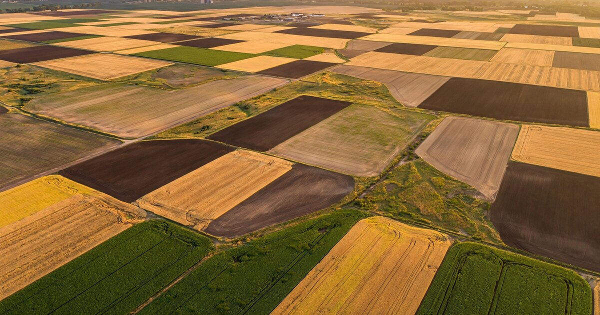

Farmland Lease Rate Intelligence SaaS for Tenant Farmers and Non-Operating Landlords
Two million landlords collected $34.1 billion in farmland rent in 2024. Their average age is 69.2. More than half have never farmed. They set rent once a year using a USDA county average that masks 30-50% field-level variance — and so does every tenant farmer sitting across the kitchen table from them.

The Problem
The United States rents out more farmland than France, Germany, and the United Kingdom have combined. According to the 2024 TOTAL survey released by USDA's National Agricultural Statistics Service in March 2026, over 2 million landowners rented out 347.8 million acres of agricultural land, generating $34.1 billion in rental income — a 9% increase from 2014. Those rented acres, plus buildings, carry a combined valuation exceeding $1.6 trillion.
Here is the strange part: neither side of this $34 billion market has any real pricing data.
Landlords — 79% of whom are non-operating owners who do not farm the land themselves — set annual cash rent by referencing the USDA NASS county average, which is published once per year and aggregates thousands of leases across wildly different soil types, drainage qualities, and irrigation configurations into a single number. In 2025, the national average cropland cash rent was $161 per acre. That figure is about as useful for pricing a specific 160-acre parcel as "the average American home costs $420,000" is for pricing a specific house. The county average for McLean County, Illinois, one of the most productive in the nation, is approximately $290 per acre — but fields within that county range from poorly drained hillsides worth $180 to deep Drummer silty clay loam worth over $380. Same county, same USDA data point, and a hundred-dollar gap the benchmark cannot see.
Tenant farmers face the mirror image — they negotiate lease renewals every fall, typically over coffee in the landlord's living room, armed with the same blunt county average and whatever they heard the neighbor is paying. In competitive markets where multiple operators want the same ground, farmers routinely overpay because they have no tool to decompose whether the landlord's ask reflects actual field quality or just the fact that someone else bid higher last year.
The result is systematic mispricing on a massive scale. Tillable, an agtech startup that raised an $8.25 million Series A in 2019, estimated that U.S. farmland owners collectively leave $8 billion per year on the table due to underpriced rent. That number only captures the landlord side. When you add the tenant overpayment in heated markets — Iowa's prime ground routinely leases above its economic breakeven for corn — the aggregate annual mispricing across 348 million rented acres likely exceeds $10 billion.
Market Size
TAM calculation: The addressable market consists of two segments. On the supply side, USDA's 2024 TOTAL survey counted 2.0 million landlord entities. Of these, approximately 800,000 are in the Midwest, which concentrates the highest-value cash-rent cropland. The addressable subset — landlords renting 80+ acres who generate enough rental income to justify analytics software — is roughly 450,000. On the demand side, USDA's 2022 Census of Agriculture counted approximately 900,000 farms that rent at least some of their operated acreage.
At a $199/year Landlord tier (soil-adjusted rent benchmarks, lease term comparison, renewal rate recommendation) targeting 450,000 addressable landlords, the supply-side TAM is $89.6 million. At a $399/year Operator tier (multi-field portfolio analytics, breakeven modeling, competitive bidding intelligence) targeting 900,000 tenant farm operations, the demand-side TAM is $358.2 million. Combined base TAM: $447.8 million. A Premium Enterprise tier at $2,400/year targeting institutional farmland investors (roughly 500 firms managing portfolios of 5,000+ acres) adds a $1.2 million niche.
Year 3 target: 15,000 landlord subscribers at $199 plus 8,000 operator subscribers at $399 plus 80 institutional accounts at $2,400 = $6.4 million ARR.
The Product
A field-level lease rate intelligence platform that combines public agronomic data with anonymized transaction data to produce parcel-specific rent benchmarks. Not a marketplace or a listing site — pure analytics, the CoStar of farmland leasing. — the CoStar of farmland leasing.
- Soil-adjusted rate benchmarks: Every field in the United States has a Soil Productivity Index (SPI) or Corn Suitability Rating (CSR2) derived from USDA's SSURGO soil survey. These indices measure inherent yield potential based on soil type, slope, drainage, and water-holding capacity. By correlating county-level NASS rent data with field-level SPI distributions — and layering in FSA crop insurance actual production histories (APH), which are available at the farm-unit level — the platform generates a rent-per-SPI-point curve for each agricultural county. A landlord enters their parcel number or drops a pin on a map, and the system returns the soil-adjusted fair market rent for that specific field, with confidence intervals and the position relative to comparable leases in the same SPI tier
- Lease term analyzer: Cash rent is only one variable. Bonus provisions, cost-sharing arrangements (landlord-paid fertilizer, lime, or tile drainage), hunting rights, CRP enrollment, cover crop requirements, and early termination clauses all affect the effective economic rent. The platform normalizes lease terms to a standardized "effective rent per productive acre" metric, so landlords and tenants can compare apples to apples across different lease structures
- Crop economics breakeven engine: For tenant farmers, the question is not whether rent is at the 50th or 75th percentile. The question is whether they can make money at that rent given current input costs, expected yields, and forward commodity prices. This module pulls CBOT futures for the relevant crop, USDA-projected input costs (seed, fertilizer, crop insurance premiums, machinery), and field-specific yield expectations from APH data. Output: the maximum rent the tenant can pay on a given field and still earn a target return, updated as commodity prices move
- Renewal intelligence dashboard: Most cash leases renew annually with a handshake. The platform tracks local market signals — USDA NASS county-level rent changes, nearby land sale prices (which correlate with rent expectations), crop insurance indemnity patterns (a drought year suppresses lease demand), and aggregate operator financials from USDA ERS ARMS data — to recommend whether to hold, raise, or lower rent at each annual renewal. For landlords, it replaces the annual "CPI plus a gut check" with a data-driven rate recommendation
Unit Economics
| Metric | Value |
|---|---|
| Landlord subscription (annual) | $199 |
| Operator subscription (annual) | $399 |
| Institutional subscription (annual) | $2,400 |
| Blended ARPU (assuming 60/35/5 mix) | $279/year |
| Data infrastructure cost per subscriber/year | $22 |
| Customer acquisition cost | $85 |
| Expected LTV (4.2-year avg retention, 92% gross margin) | $1,080 |
| LTV:CAC ratio | 12.7:1 |
| Gross margin | 92% |
| Startup cost (18-month runway) | $1.9M |
| Break-even | 14 months |
Methodology note: The unusually high LTV:CAC ratio reflects two dynamics specific to agricultural decision-making. First, CAC is low ($85) because the primary distribution channels are farm bureau county chapters, Extension Service events, and agricultural lender referrals — all trusted community institutions with captive audiences of exactly the target customer. Second, retention is high (4.2 years estimated) because lease renewal decisions are annual and seasonal: once the platform is embedded in a landlord's Q4 rate-setting workflow, the switching cost is not technical but cognitive. They used the number last year. It worked. The default is to use it again. This mirrors the retention dynamics of STR's hotel benchmarking product and Yardi's multifamily analytics, both of which achieve 90%+ annual retention on B2B pricing intelligence. The $1.9M startup cost reflects a lean team (2 engineers, 1 agronomist, 1 BD hire) and the fact that the core input data — SSURGO soils, NASS rents, FSA yields, CBOT futures — is all publicly available and machine-readable. There is no expensive data acquisition problem to solve.
Go-to-Market
Phase 1 (months 1-8): Build the Corn Belt first. Illinois, Iowa, and Indiana account for $7.8 billion of the $34 billion national rental market and have the deepest public data infrastructure: Illinois's farmdoc team at University of Illinois publishes the most granular cash rent survey data anywhere in the country, Iowa State's Center for Agricultural and Rural Development (CARD) publishes lease rate analysis, and Indiana's Purdue Center for Commercial Agriculture runs an annual cash rent survey with township-level resolution. Seed the platform with these three states' data, recruit 500 beta users through Farm Bureau county meetings and Extension offices, and validate product-market fit before expanding. Beta users contribute anonymized lease data in exchange for free access to benchmarks — the same network-effect flywheel that built STR's hotel comp set.
Phase 2 (months 9-16): Expand to the remaining Corn Belt (Minnesota, Ohio, Nebraska, Wisconsin, Missouri) and Northern Plains (North Dakota, South Dakota, Kansas). Simultaneously, build the agricultural lender channel. Farm Credit System institutions (73 associations, $430 billion in loans) and community ag banks require lease documentation as part of operating loan underwriting. A lender integration that pre-populates field-level rent benchmarks into the loan package creates a distribution channel that pays for itself: the lender gets better underwriting data, the borrower gets a rent benchmark for their negotiation, and the platform gets distribution into every lease renewal conversation the lender touches. Launch the $399 Operator tier with crop-economics breakeven modeling.
Phase 3 (months 17-24): Launch the institutional tier for PE-backed farmland investors. Nuveen Natural Capital manages $13.1 billion across 3 million acres and just filed for a $3 billion farmland REIT. Farmland Partners (NYSE: FPI) owns 150,000+ acres. Gladstone Land Corporation (Nasdaq: LAND) owns 112,000+ acres. These institutional owners need lease rate optimization across portfolios of hundreds of properties — the same product, just with multi-asset dashboards, portfolio-level analytics, and API access for integration with their existing asset management systems. The institutional tier also creates a data feedback loop: anonymized lease rates from institutional portfolios (which tend to be arms-length, market-rate transactions) improve the benchmarking accuracy for the entire platform.
Competitive Landscape
| Company | What It Does | Lease Rate Intelligence? | Pricing |
|---|---|---|---|
| USDA NASS | Annual county-level average cash rent survey | County averages only — no field-level, no soil adjustment, no lease term normalization | Free |
| Tillable | Farmland lease marketplace — connects landlords with tenant farmers | Price discovery through bidding, but no persistent benchmarking or analytics layer | Transaction-based |
| AcreTrader | Farmland investment marketplace — fractional ownership crowdfunding | No: investment returns, not lease rate analytics | Investment minimums |
| FarmlandFinder | Farmland sale transaction data — soil maps, yield data, comparable sales | Sale prices, not lease rates. Premium data package for $50/search | $50 per parcel |
| ASFMRA | Appraisal and farm management professional association — publishes some regional benchmarks | Member-only reports, not a SaaS tool. Annual publications, not real-time | Membership-based |
| Granular (Corteva) | Farm management software — operations, financials, agronomy | No: tracks your costs and yields, not the market's lease rates | Contact sales |
| This startup | Field-level lease rate benchmarking + renewal optimization | Core product: soil-adjusted, APH-weighted, term-normalized lease rate intelligence | $199-2,400/yr |
The competitive gap mirrors the one that existed in commercial real estate before CoStar aggregated lease comps, in hotels before STR built its comp-set benchmarking product, and in apartment rentals before RealPage and Yardi created rent optimization engines. Every company in the farmland technology stack has built either a marketplace (Tillable), an investment platform (AcreTrader, FarmFundr), or an operations tool (Granular, Bushel, Climate FieldView). Nobody has built the analytics layer that sits between them and tells both sides of a lease what the field is actually worth. That layer — the pricing intelligence that transforms an opaque bilateral negotiation into a data-informed decision — is the missing piece.
Why Now
Five forces are converging, and the window they open will not stay open long.
First, the landlord population is aging out. The average age of the 1.8 million non-operating landlords is 69.2 years — over a decade older than the average farmer (58.1). Only 12% are under 55. Nearly 52% have never farmed. When these landlords die or become incapacitated, their heirs — who are even less likely to have farmed — will inherit rented acreage and have absolutely no basis for setting rent. The USDA projects that only 5% of farmland will change hands via sale or gift in the next five years; the rest will transfer through trusts and wills, keeping leasing as the dominant land-access mechanism. These heirs are the perfect early-adopter cohort: they need the tool, they are digitally literate, and they have no incumbent process to defend.
Second, institutional capital is flooding in. Nuveen Natural Capital manages $13.1 billion in farmland assets across 3 million acres and is launching a $3 billion farmland REIT. The NCREIF Farmland Index, which tracks the seven largest institutional farmland investors, shows a 231% increase in the number of farmland properties held by institutional investors between 2008 and 2023, with total portfolio value surging from roughly $2 billion to $16.2 billion. Bill Gates is the largest private farmland owner in the United States at approximately 270,000 acres. These institutional buyers demand the same lease analytics sophistication they get in every other real estate asset class. Right now, they build it internally because no vendor sells it.
Third, the data infrastructure finally exists. USDA's Web Soil Survey now makes SSURGO soil data queryable via API at the field level. FSA crop insurance data, including actual production histories and indemnity records, is available through the Risk Management Agency. NASS publishes rent surveys at the county level. State-level Extension services — particularly Illinois farmdoc, Iowa CARD, and Purdue — publish sub-county cash rent data. Ten years ago, assembling these datasets required a PhD student and six months. Today, they are all machine-readable, API-accessible, and free.
Fourth, commodity price volatility is compressing tenant margins. Corn traded at $6.54 per bushel in 2022-23, fell to $4.24 in 2024-25, and is projected at $4.15 for 2025-26. Meanwhile, cash rents have been sticky — they surged during the commodity boom but have barely declined since. Illinois farmdoc data shows Excellent-quality Illinois cropland renting at $375/acre in 2026, virtually unchanged from the 2023 peak despite a 37% drop in corn prices. Tenant farmers are being squeezed between falling revenue and sticky rent, and they need data to renegotiate. For the first time in years, tenants have economic incentive to push back — if they have the numbers.
Fifth, tariff uncertainty is shaking the market. Agricultural exports face renewed trade tensions in 2026, with retaliatory tariffs affecting soybean and pork shipments to key markets. Price uncertainty makes breakeven modeling — "Can I afford this rent given what I might get for the crop?" — more valuable than it has been in a decade. When commodity prices are high and stable, both sides can afford to be sloppy with lease pricing. When margins tighten and volatility rises, the cost of mispricing becomes real.
Original Contribution: The Soil-Adjusted Rent Gap
A calculation nobody has published at scale: USDA's county-level cash rent averages are the universal reference point for farmland lease negotiations across the United States. But they are blunt instruments. Within any given county, soil productivity — measured by the Soil Productivity Index (SPI) in Illinois or the Corn Suitability Rating (CSR2) in Iowa — varies enormously from field to field based on soil type, slope, drainage infrastructure, and water-holding capacity.
Take McLean County, Illinois, which sits in the heart of the most productive farmland on Earth. The county average cash rent, per farmdoc's 2026 survey, is approximately $290 per acre. But McLean County's SPI values range from below 100 (Clarence silty clay loam with poor natural drainage, side-slope positions) to above 147 (Drummer silty clay loam with tile drainage, flat upland positions). Based on regression analysis of the Illinois Society of Professional Farm Managers and Rural Appraisers (ISPFMRA) annual survey data, each SPI point correlates with approximately $2.50 in annual cash rent per acre. That means the same county contains fields whose soil-adjusted fair market rent ranges from roughly $250 to $367 per acre — a spread of $117, or 40% of the county average.
When a landlord uses the $290 county average to set rent on an SPI-147 field, they are underpricing by roughly $77 per acre. For a 320-acre farm, that is $24,640 per year in foregone rent. When a tenant farmer uses the same county average to evaluate a bid on SPI-105 ground, they are overpaying by approximately $28 per acre — $8,960 per year on the same 320 acres.
Scale this nationally. The 348 million rented acres in the U.S. carry an average cash rent of $161. If the average soil-adjusted mispricing is 12% — conservative, given that the within-county SPI variance we documented above produces 40% spreads — the aggregate annual mispricing across all rented farmland is approximately $6.7 billion. This aligns with Tillable's independently estimated $8 billion in "value left on the table" (which uses a different methodology based on market-clearing price discovery) and suggests that the bulk of the mispricing gap is attributable to the absence of soil-adjusted benchmarks, not the absence of a marketplace.
The implication is direct: the dominant pricing mechanism in the largest agricultural input market in the country — a $34 billion annual market — operates at county-level resolution in an era when the data to achieve field-level resolution is publicly available and free. Building the analytical layer that bridges this gap is a $2 million engineering project, not a research frontier.
Limitations
Three gaps constrain this analysis. First, the $2.50-per-SPI-point regression is derived from Illinois data (ISPFMRA surveys), which may not generalize cleanly to other states. Iowa uses CSR2, a different soil-rating system with a different scale. Western states with irrigated ground introduce water rights as a pricing variable that SPI does not capture. The soil-adjusted rent model will require state-by-state calibration, not a single national formula.
Second, the network effect that makes this product valuable — anonymized transaction data from participating landlords and tenants — faces a classic cold-start problem. In early markets, the platform will rely heavily on public data (NASS, farmdoc, ISPFMRA), which is directionally correct but lacks the field-level granularity that self-reported transaction data provides. Until the contributing user base reaches critical mass (estimated at 500+ leases per county), the benchmarks will carry wide confidence intervals in some areas.
Third, and most fundamentally: farmland leasing is a relationship business. A tenant farmer who has rented the same ground from the same family for three generations is not going to walk in with a printout and demand a rate reduction. The tool needs to enhance that negotiation, not replace it — and the product design must thread the needle between providing actionable data and disrupting the social fabric of rural communities. Tillable's experience is cautionary: when the company sent letters to landlords suggesting they could get higher rent through the platform, it triggered backlash from tenant farmers who saw it as an outside disruptor threatening multi-generational lease relationships.
Strongest Counterargument
The most serious objection is that the farmland lease market is intentionally opaque because both sides benefit from opacity — just not in the way an economist would expect. Landlords who could extract higher rent often choose not to because they value the relationship with a tenant who maintains the soil, keeps ditches clean, controls weeds, and calls when the tile blows out. Tenant farmers who could negotiate lower rent often accept above-market rates because losing the lease — and having no field to plant next spring — is catastrophic. The handshake premium is not inefficiency. It is insurance.
If true, a pricing intelligence tool could actively harm both parties by converting relationship-based negotiations into price-based ones, triggering an arms race that replaces stable, trust-based leases with annual churn as landlords chase the highest bidder and tenants undercut each other. The hotel industry's experience with STR and revenue management bears this out: rate transparency improved RevPAR for individual hotels but also contributed to rate compression during downturns because every hotel could see every other hotel's rate and match it on the way down.
The response is that opacity benefits are unevenly distributed. The landlord who inherited 640 acres, lives in Phoenix, has never farmed, and renews the lease every year at whatever the tenant proposes is not benefiting from a relationship premium — they are leaving money on the table because they lack information. The 52% of landlords who have never farmed are not making informed decisions to accept below-market rent in exchange for good stewardship. They are making uninformed decisions because no alternative exists.
What You Can Do
If you're a non-operating landlord: Before your next lease renewal (typically negotiated September through November for the following crop year), pull your field's soil productivity rating from USDA Web Soil Survey. Cross-reference against your state's university Extension cash rent survey (Illinois farmdoc, Iowa State CARD, Purdue for Indiana) to see where your field falls relative to the county average. If your soil rating is above county median and your rent is at or below county average, you are almost certainly underpriced.
If you're a tenant farmer: Run a breakeven analysis before every lease renewal. Take your expected yield (your APH from crop insurance), multiply by the projected harvest-time commodity price (use CBOT December futures for corn, November for beans), subtract your per-acre production costs (seed, fertilizer, pesticide, fuel, crop insurance premium, machinery depreciation — USDA ERS publishes state-level benchmarks), and subtract your target return per acre. What remains is your maximum affordable rent. If the landlord's ask exceeds it, you have the numbers to explain why.
If you're a builder: Start with one state. Illinois has the best public data infrastructure. Acquire the ISPFMRA annual land values report ($35) to calibrate your SPI-to-rent regression. Build a prototype that takes a parcel ID or GPS coordinate, pulls SSURGO soil data and NASS county rent, and outputs a soil-adjusted rent range. Get 50 farm managers and 50 landlords to test it. If they come back, you have a business. The entire data stack is public and free. The engineering is straightforward — the hard part is trust.
The Bottom Line
The largest input market in American agriculture — $34 billion in annual rents paid across 348 million acres — prices itself with a single county-average number published once a year by a government agency, in a world where field-level soil data, crop insurance yield histories, and commodity futures are all freely available in real time. The result is systematic mispricing that costs both sides billions of dollars annually and gets worse every year as the landlord population ages, institutional capital floods in, and commodity margins compress. Every other asset class that went through this transition — hotels, apartments, commercial real estate, self-storage — spawned a multi-billion-dollar analytics industry. Farmland is the last $1.6 trillion asset class negotiating in the dark.